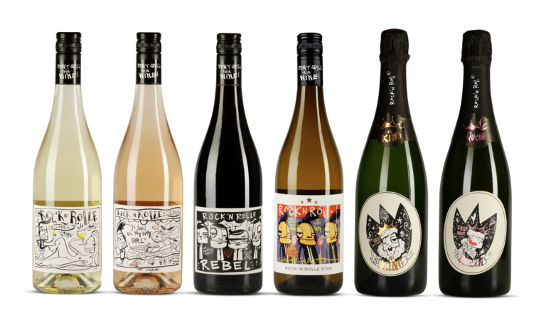

Nestled snugly in the heart of the Pays d’Oc, the soul of Rock ‘n Rolle is alive and thriving. At Badet Clément, we carefully select all our very best southern French Rolle grapes from choice vines grown on the Mediterranean’s finest rocky, chalky, clay soils.
Bottled in France, with artistry from Amsterdam, our labels embody the culture of Rock ‘n Rolle and our QR-codes direct you to groovy Rock ‘n Rolle playlists on Spotify. Rock ‘n Rolle wines are a damn good blend of wine, art and music.
Don’t spill this wine!
